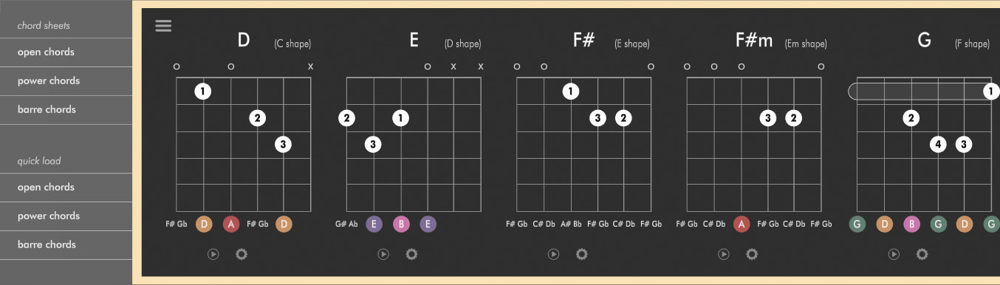

User Guide
Note: AudioTheory Guitars is periodically updated with new features. New versions are always free for existing customers and can be downloaded either through your Gumroad account or the Steam client.
This guide is also updated; to make use of all features described here please ensure you are on the latest version.
You can launch AudioTheory Guitars from the Guitars.exe executable file (Windows) or Guitars.app file (Mac OS). This load up the main interface from where you can access the features detailed in this guide.
You can launch AudioTheory Guitars from the Guitars.exe executable file (Windows) or Guitars.app file (Mac OS). This load up the main interface from where you can access the features detailed in this guide.
 Keyboard
Keyboard
The keyboard accepts input from any of the following sources:
Mouse – click on the desired key to play it.
Keyboard – press the ‘keyboard’ button to register QWERTY input from your computer keyboard.
MIDI – connect an external MIDI device for full control of the keyboard. Note: you will need to sync up the onscreen octave value to the octave on your device for accurate input.
Using the options just above the keyboard you can select the instrument used for sound output as well as the current octave. There are also options to display or hide the keyboard note overlay as well as a 'lock to scale' feature where only notes selected in the scale will give audio feedback.
 Scale
Scale
The note boxes in the bottom left of the screen can be used to exclude specific notes from the keyboard, as well as the chord and fretboard diagrams. The 'scale' button provides preset options for using a standard piano scale.
Each cord can be swapped using the gear icon. Chord notes display relative to the capo and tuning settings – this means that when choosing a chord you are selecting a chord shape, with the chord note matching in standard E tuning (without a capo). Both the actual note, as well as the shape, display when either a capo or non-standard tuning are used.
There is a 'play' button next to each chord. Press this to see the guitar chord mapped onto the keyboard and the corresponding fretboard notes.
 In the top left hand corner of the chord box is a menu icon, this brings up some additional chord options. The 'chord sheets' option can be selected to view all avaialble chords (with diagrams) from a single screen.
The guitar fretboard displays all notes and can be customised to match your real-life guitar configuration. Options include left handed mode, as well as tuning and capo settings. These also update the chord diagrams.
You also play each note by clicking on it in the fretboard diagram. This is particularly useful when translating from guitar to piano; simply click on your guitar note to see where it sits on the keyboard.